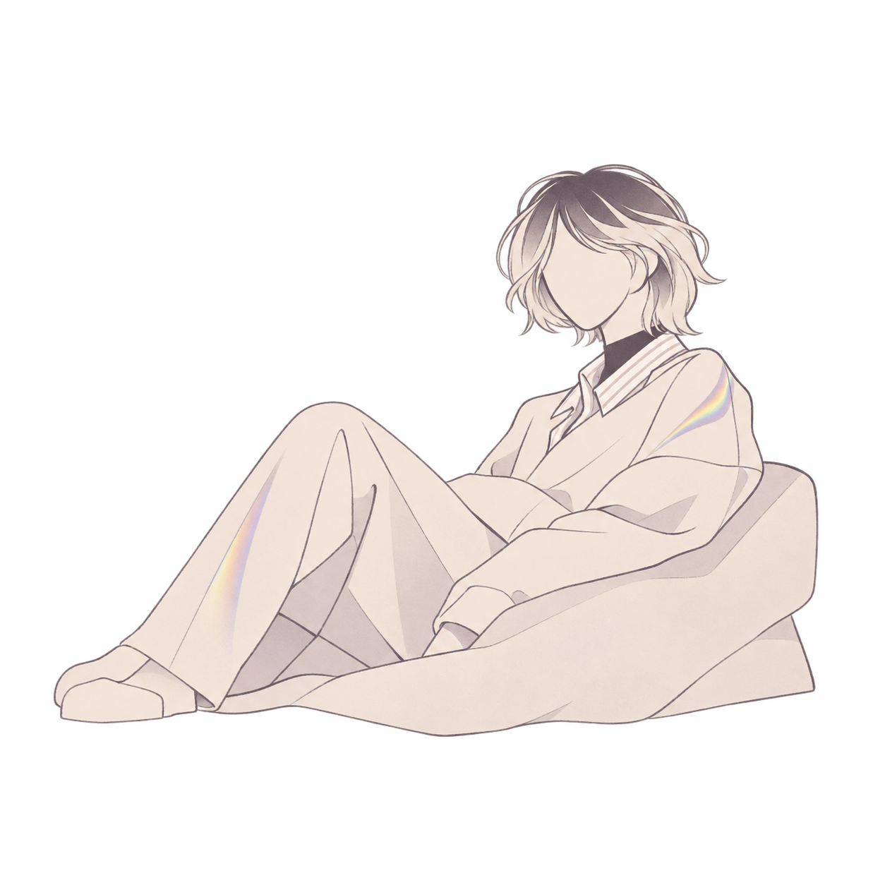
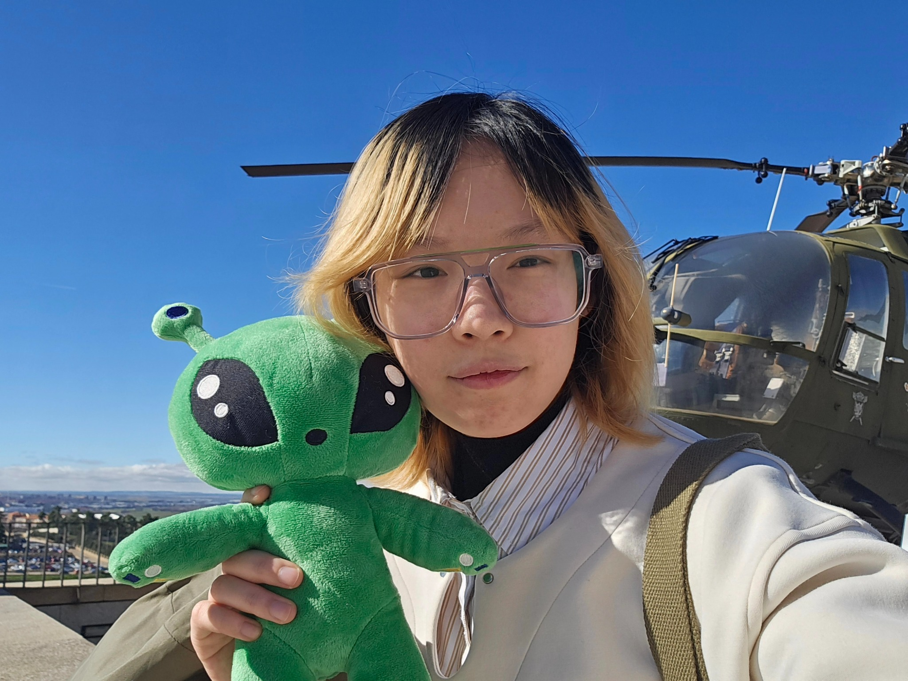

BIO-BASED TOY DESIGN
BIO-BASED TOY DESIGN
MyKo
Bio-based Toy Design · Open-ended Play · Material Exploration

Hi, I'm Hanxu Yu, a Master's student in Industrial Design at Eindhoven University of Technology (TU/e).
My work explores interaction design, design research, and more-than-human perspectives. I'm interested in how tangible interactions and textile practices can support new ways of noticing, interpreting, and relating to living systems.
I combine qualitative research with hands-on experimentation, prototyping, and the design of physical and digital experiences.
EXPLORE MY WORK ↗
MSc in Industrial Design
Focus on research through design,
tangible interaction, material exploration,
and more-than-human design.
BEng in Industrial Design
Focus on object design, well-being
of vulnerable groups, while also
engaging in interaction design.
Interested in my work or want to get in touch? You're welcome to send me an email.
EMAIL ME ↗ akashic55256@gmail.com